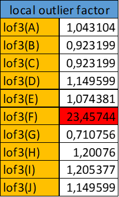

Tools yang digunakan#
pada pengambilan data kita menggunakan beberapa tools yaitu tempat penyimpanan database secara online yaitu aiven, untuk melakukan manajemen pada database yang kita punya pada aiven kita bisa menggunakan heidisql dan deepnote.
Aiven#
Aiven adalah sebuah platform cloud yang menyediakan layanan manajemen data yang lengkap dan terkelola. Mereka menawarkan berbagai layanan database open-source, seperti PostgreSQL, MySQL, Kafka, Elasticsearch, Cassandra, Redis, dan banyak lagi. Platform ini dirancang untuk memudahkan pengembang dan organisasi dalam menyimpan, mengelola, dan menganalisis data mereka dengan mudah dan efisien. pada kali ini kita akan membuat server database untuk MySQL dan PostgreSQL, namun sebelum pembuatan server kalian harus melakukan pembuatan akun untuk aiven.
maka kita akan bisa melihat server yang berhasil kita buat diatas, yaitu server untuk MySQL dan PostgreSQL
HeidiSQL#
HeidiSQL adalah sebuah aplikasi manajemen basis data yang open-source dan gratis untuk sistem manajemen basis data (DBMS) seperti MySQL, MariaDB, Microsoft SQL Server, PostgreSQL, dan SQLite. Dirancang khusus untuk memudahkan pengembang database dalam melakukan berbagai tugas administratif terkait basis data, termasuk pengaturan, desain skema, eksekusi query, dan pemantauan. pada heidiSQL kita bisa melakukan pengeditan pada database yang ada di aiven, namun kita harus mengkonfigurasi database kita yang ada di aiven dengan heidiSQL.

lakukan pencocokan konfigurasi dengan yang ada pada services database kita yang berada pada aiven (Perhatikan jika server merupakan database MySQL maka pada heidiSQL).

lakukan juga konfigurasi pada postgreSQL.
Deepnote#
Deepnote adalah platform kolaborasi dan pengembangan data yang dirancang untuk memudahkan tim data scientist, analis data, dan pengembang bekerja secara bersama-sama dalam proyek analisis data dan machine learning. Platform ini menyediakan lingkungan yang lengkap untuk mengelola, mengolah, menganalisis, dan memvisualisasikan data, serta untuk mengembangkan model machine learning. pada deepnote kita juga bisa melakukan manajemen database kita dengan cara kita melakukan intgration dengan database yang ingin kita manage. pada integration kita pilih sesuai database kita, jika database kita MySQL maka kita lakukan integrationnya dengan MySQL

lakukan konfigurasi sama seperti dengan heidiSQL tersebut. namun kita belum bisa melakukan pengeditan database karena kita belum mempunyai data yang suda kita simpan pada aiven.
Mengumpulkan data#
Untuk pengumpulan data kita akan melakukan download data iris pada url : https://www.kaggle.com/datasets/uciml/iris. setelah mendowload data iris pada website tersebut kalian tinggal melakukan extract data tersebut maka akan muncul file iris.csv maka kita berhasil mendapatkan data iris tersebut.
Memasukkan data pada MySQL dan potsgreSQL#
sebelum memasukkan data iris yang kita dapatkan sebelumnya kita harus melakukan konversi csv to sql, banyak website yang menawarkan konversi tinggal cari diinternet dan saya menggunakan website : https://tableconvert.com/csv-to-sql. setelah melakukan konversi maka kita tinggal membuka heidiSQL yang ingin kita masukkan datanya. Contoh imputasi data ke MySQL.
Pertama kita click kanan pada server database kita, nanti akan muncul create new dan pilih database dan berinama sesuai keinginan kalian

Selanjutnya kita pilih database yang sudah kita buat sebelumnya, dan pada tab nama database kita ada Query, kita click pada query tersebut selanjutnya kita tinggal click kanan pada kotak kosong tersebut dan pilih load sql dan pilih data yang suda kita punya sebelumnya

Setelah itu kita tinggal run dan tunggu data kita selesai diinputkan pada database

maka akan muncul table sesuai data yang kita inputkan
lakukan juga input pada data postgreSQL, setelah itu kita tinggal melakukan integration pada deepnote dengan database kita samakan dengan database yang kita punya.
Melakukan pemisahan data MYSQL dan POSTGRESQL#
kita melakukan pemisahan data pada sql terdapat id, sepallengt, sepalwidth, dan species maka kita lakukan drop pada petallength, dan petalwidth
df_10 = _deepnote_execute_sql('ALTER TABLE tableName DROP COLUMN PetalWidthCm, DROP COLUMN PetalLengthCm', 'SQL_8CF1E489_1C56_4E18_BF27_C266B7EECFF1', audit_sql_comment='', sql_cache_mode='cache_disabled')
df_10
---------------------------------------------------------------------------
NameError Traceback (most recent call last)
Cell In[1], line 1
----> 1 df_10 = _deepnote_execute_sql('ALTER TABLE tableName DROP COLUMN PetalWidthCm, DROP COLUMN PetalLengthCm', 'SQL_8CF1E489_1C56_4E18_BF27_C266B7EECFF1', audit_sql_comment='', sql_cache_mode='cache_disabled')
2 df_10
NameError: name '_deepnote_execute_sql' is not defined
df_14 = _deepnote_execute_sql('ALTER TABLE preminMean DROP COLUMN PetalWidthCm, DROP COLUMN PetalLengthCm', 'SQL_8CF1E489_1C56_4E18_BF27_C266B7EECFF1', audit_sql_comment='', sql_cache_mode='cache_disabled')
df_14
df_15 = _deepnote_execute_sql('ALTER TABLE preminKnn DROP COLUMN PetalWidthCm, DROP COLUMN PetalLengthCm', 'SQL_8CF1E489_1C56_4E18_BF27_C266B7EECFF1', audit_sql_comment='', sql_cache_mode='cache_disabled')
df_15
pada postgre kita hanya membutuhkan id, petallength, petalwidth, dan species maka kita lakukan drop pada sepallength dan sepalwidth
df_16 = _deepnote_execute_sql('ALTER TABLE tablename DROP COLUMN sepallengthcm, DROP COLUMN sepalwidthcm', 'SQL_5853BB35_05F0_4604_B406_1DFA6D0A92DA', audit_sql_comment='', sql_cache_mode='cache_disabled')
df_16
df_18 = _deepnote_execute_sql('ALTER TABLE preminmean DROP COLUMN sepallengthcm, DROP COLUMN sepalwidthcm', 'SQL_5853BB35_05F0_4604_B406_1DFA6D0A92DA', audit_sql_comment='', sql_cache_mode='cache_disabled')
df_18
df_19 = _deepnote_execute_sql('ALTER TABLE preminknn DROP COLUMN sepallengthcm, DROP COLUMN sepalwidthcm', 'SQL_5853BB35_05F0_4604_B406_1DFA6D0A92DA', audit_sql_comment='', sql_cache_mode='cache_disabled')
df_19
Install connector SQL#
Memasukkan data tableName pada postegree dan sql ke dataframe sql, lakukan install untuk connector sql dan postgre
!pip install mysql-connector-python
Collecting mysql-connector-python
Downloading mysql_connector_python-8.3.0-cp39-cp39-manylinux_2_17_x86_64.whl (21.5 MB)
━━━━━━━━━━━━━━━━━━━━━━━━━━━━━━━━━━━━━━━━ 21.5/21.5 MB 46.7 MB/s eta 0:00:00
?25hInstalling collected packages: mysql-connector-python
Successfully installed mysql-connector-python-8.3.0
[notice] A new release of pip is available: 23.0.1 -> 24.0
[notice] To update, run: pip install --upgrade pip
Install connector POSTGRE#
!pip install psycopg2-binary
Requirement already satisfied: psycopg2-binary in /shared-libs/python3.9/py/lib/python3.9/site-packages (2.9.4)
[notice] A new release of pip is available: 23.0.1 -> 24.0
[notice] To update, run: pip install --upgrade pip
Melakukan koneksi database ke dataframe deepnote#
setelah itu kita akses server kita di aiven, sesuaikan dengan yang server postgre dan sql supaya nanti akan terbaca pada dataframe sql di deepnote
import pandas as pd
import mysql.connector
import psycopg2
sql_connection = mysql.connector.connect(
host="datamining1-malik22168.a.aivencloud.com",
user="avnadmin",
password="AVNS_Gg1SZZ0NgVgxwWB3wP1",
port = "12594",
database="tugas2"
)
postgres_connection = psycopg2.connect(
host="datamining-malik22168.a.aivencloud.com",
database="datamining",
user="avnadmin",
port="12594",
password="AVNS_tqWcxfR1VAydjtcENIn"
)
sql_query = "SELECT * FROM tableName"
data_sql = pd.read_sql(sql_query, sql_connection)
sql_query1 = "SELECT * FROM preminMean"
data_sql_mean = pd.read_sql(sql_query1, sql_connection)
sql_query2 = "SELECT * FROM preminKnn"
data_sql_knn = pd.read_sql(sql_query2, sql_connection)
postgres_query = "SELECT * FROM tablename"
data_postgres = pd.read_sql(postgres_query, postgres_connection)
postgres_query1 = "SELECT * FROM preminmean"
data_postgres_mean = pd.read_sql(postgres_query1, postgres_connection)
postgres_query2 = "SELECT * FROM preminknn"
data_postgres_knn = pd.read_sql(postgres_query2, postgres_connection)
/tmp/ipykernel_292/4069721288.py:22: UserWarning: pandas only supports SQLAlchemy connectable (engine/connection) or database string URI or sqlite3 DBAPI2 connection. Other DBAPI2 objects are not tested. Please consider using SQLAlchemy.
data_sql = pd.read_sql(sql_query, sql_connection)
/tmp/ipykernel_292/4069721288.py:25: UserWarning: pandas only supports SQLAlchemy connectable (engine/connection) or database string URI or sqlite3 DBAPI2 connection. Other DBAPI2 objects are not tested. Please consider using SQLAlchemy.
data_sql_mean = pd.read_sql(sql_query1, sql_connection)
/tmp/ipykernel_292/4069721288.py:28: UserWarning: pandas only supports SQLAlchemy connectable (engine/connection) or database string URI or sqlite3 DBAPI2 connection. Other DBAPI2 objects are not tested. Please consider using SQLAlchemy.
data_sql_knn = pd.read_sql(sql_query2, sql_connection)
/tmp/ipykernel_292/4069721288.py:31: UserWarning: pandas only supports SQLAlchemy connectable (engine/connection) or database string URI or sqlite3 DBAPI2 connection. Other DBAPI2 objects are not tested. Please consider using SQLAlchemy.
data_postgres = pd.read_sql(postgres_query, postgres_connection)
/tmp/ipykernel_292/4069721288.py:34: UserWarning: pandas only supports SQLAlchemy connectable (engine/connection) or database string URI or sqlite3 DBAPI2 connection. Other DBAPI2 objects are not tested. Please consider using SQLAlchemy.
data_postgres_mean = pd.read_sql(postgres_query1, postgres_connection)
/tmp/ipykernel_292/4069721288.py:37: UserWarning: pandas only supports SQLAlchemy connectable (engine/connection) or database string URI or sqlite3 DBAPI2 connection. Other DBAPI2 objects are not tested. Please consider using SQLAlchemy.
data_postgres_knn = pd.read_sql(postgres_query2, postgres_connection)
Akses DataFrame pada data asli#
setelah itu kita tinggal melakukan pengaksesan data frame yang sudah kita konfigurasi sebelumnya dengan melakukan inner join dengan pada data postgre id = data sql id.
df_1 = _deepnote_execute_sql('SELECT * FROM data_postgres INNER JOIN data_sql ON data_postgres.id = data_sql.id', 'SQL_DEEPNOTE_DATAFRAME_SQL', audit_sql_comment='', sql_cache_mode='cache_disabled')
df_1
| id | petallengthcm | petalwidthcm | species | Id | SepalLengthCm | SepalWidthCm | Species | |
|---|---|---|---|---|---|---|---|---|
| 0 | 1 | 1.4 | 0.2 | Iris-setosa | 1 | 5.1 | 3.5 | Iris-setosa |
| 1 | 2 | 1.4 | 0.2 | Iris-setosa | 2 | 4.9 | 3.0 | Iris-setosa |
| 2 | 3 | 1.3 | 0.2 | Iris-setosa | 3 | 4.7 | 3.2 | Iris-setosa |
| 3 | 4 | 1.5 | 0.2 | Iris-setosa | 4 | 4.6 | 3.1 | Iris-setosa |
| 4 | 5 | 1.4 | 0.2 | Iris-setosa | 5 | 5.0 | 3.6 | Iris-setosa |
| ... | ... | ... | ... | ... | ... | ... | ... | ... |
| 145 | 104 | 5.6 | 1.8 | Iris-virginica | 104 | 6.3 | 2.9 | Iris-virginica |
| 146 | 115 | 5.1 | 2.4 | Iris-virginica | 115 | 5.8 | 2.8 | Iris-virginica |
| 147 | 142 | 5.1 | 2.3 | Iris-virginica | 142 | 6.9 | 3.1 | Iris-virginica |
| 148 | 143 | 5.1 | 1.9 | Iris-virginica | 143 | 5.8 | 2.7 | Iris-virginica |
| 149 | 74 | 4.7 | 1.2 | Iris-versicolor | 74 | 6.1 | 2.8 | Iris-versicolor |
150 rows × 8 columns
Identifikasi Missing Value#
Missing values, atau nilai yang hilang, adalah keadaan di mana tidak ada data yang tersedia untuk beberapa entri atau variabel dalam dataset. Keberadaan nilai yang hilang dapat menyebabkan masalah serius dalam analisis data dan pemodelan, karena dapat mengganggu statistik deskriptif, membuat analisis tidak akurat, dan mempengaruhi kualitas model yang dibangun. pada missing values kita bisa menemukan beberapa cara mengatasinya yaitu:
Identifikasi: Langkah pertama adalah mengidentifikasi di mana nilai yang hilang berada dalam dataset Anda. Ini bisa dilakukan dengan melakukan penelitian visual, statistik deskriptif, atau menggunakan fungsi khusus dalam bahasa pemrograman seperti Python atau R.
Penghapusan: Jika jumlah nilai yang hilang relatif kecil dan distribusinya acak, satu pendekatan yang umum adalah dengan menghapus baris atau kolom yang mengandung nilai yang hilang. Namun, perlu diingat bahwa pendekatan ini bisa mengurangi jumlah data yang tersedia dan mengurangi akurasi model.
Imputasi: Imputasi adalah proses mengganti nilai yang hilang dengan nilai yang diestimasi berdasarkan data yang tersedia. Terdapat berbagai metode imputasi yang dapat digunakan, seperti:
a. Imputasi Mean/Median/Mode: Mengganti nilai yang hilang dengan mean, median, atau mode dari kolom yang bersangkutan. b. Imputasi Regresi: Menggunakan regresi untuk memprediksi nilai yang hilang berdasarkan hubungan dengan variabel lain. c. Imputasi KNN (K-Nearest Neighbors): Menggunakan nilai dari observasi terdekat untuk mengisi nilai yang hilang. d. Imputasi Multivariat: Menggunakan metode seperti MICE (Multiple Imputation by Chained Equations) untuk mengisi nilai yang hilang dengan menggunakan informasi dari variabel lain dalam dataset.
kita lakukan update supaya terdapat missing value
df_2 = _deepnote_execute_sql('UPDATE preminMean set SepalLengthCm = NULL WHERE id = 2', 'SQL_8CF1E489_1C56_4E18_BF27_C266B7EECFF1', audit_sql_comment='', sql_cache_mode='cache_disabled')
df_2
df_3 = _deepnote_execute_sql('UPDATE preminMean set SepalLengthCm = NULL WHERE id = 4', 'SQL_8CF1E489_1C56_4E18_BF27_C266B7EECFF1', audit_sql_comment='', sql_cache_mode='cache_disabled')
df_3
df_4 = _deepnote_execute_sql('UPDATE preminMean set SepalLengthCm = NULL WHERE id = 5', 'SQL_8CF1E489_1C56_4E18_BF27_C266B7EECFF1', audit_sql_comment='', sql_cache_mode='cache_disabled')
df_4
df_5 = _deepnote_execute_sql('UPDATE preminMean set SepalLengthCm = NULL WHERE id = 7', 'SQL_8CF1E489_1C56_4E18_BF27_C266B7EECFF1', audit_sql_comment='', sql_cache_mode='cache_disabled')
df_5
df_23 = _deepnote_execute_sql('UPDATE preminMean set SepalLengthCm = NULL WHERE id = 10', 'SQL_8CF1E489_1C56_4E18_BF27_C266B7EECFF1', audit_sql_comment='', sql_cache_mode='cache_disabled')
df_23
setelah itu kita tampilkan data yang sudah kita hilangkan, lakukan update juga pada dataframe untuk mean
import pandas as pd
import mysql.connector
import psycopg2
sql_connection = mysql.connector.connect(
host="datamining1-malik22168.a.aivencloud.com",
user="avnadmin",
password="AVNS_Gg1SZZ0NgVgxwWB3wP1",
port = "12594",
database="tugas2"
)
postgres_connection = psycopg2.connect(
host="datamining-malik22168.a.aivencloud.com",
database="datamining",
user="avnadmin",
port="12594",
password="AVNS_tqWcxfR1VAydjtcENIn"
)
sql_query1 = "SELECT * FROM preminMean"
data_sql_mean = pd.read_sql(sql_query1, sql_connection)
postgres_query1 = "SELECT * FROM preminmean"
data_postgres_mean = pd.read_sql(postgres_query1, postgres_connection)
/tmp/ipykernel_37/1215738741.py:22: UserWarning: pandas only supports SQLAlchemy connectable (engine/connection) or database string URI or sqlite3 DBAPI2 connection. Other DBAPI2 objects are not tested. Please consider using SQLAlchemy.
data_sql_mean = pd.read_sql(sql_query1, sql_connection)
/tmp/ipykernel_37/1215738741.py:25: UserWarning: pandas only supports SQLAlchemy connectable (engine/connection) or database string URI or sqlite3 DBAPI2 connection. Other DBAPI2 objects are not tested. Please consider using SQLAlchemy.
data_postgres_mean = pd.read_sql(postgres_query1, postgres_connection)
df_6 = _deepnote_execute_sql('SELECT * FROM data_postgres_mean INNER JOIN data_sql_mean ON data_postgres_mean.id = data_sql_mean.id WHERE data_sql_mean.SepalLengthCm is NULL', 'SQL_DEEPNOTE_DATAFRAME_SQL', audit_sql_comment='', sql_cache_mode='cache_disabled')
df_6
| id | petallengthcm | petalwidthcm | species | Id | SepalLengthCm | SepalWidthCm | Species | |
|---|---|---|---|---|---|---|---|---|
| 0 | 2 | 1.4 | 0.2 | Iris-setosa | 2 | NaN | 3.0 | Iris-setosa |
| 1 | 4 | 1.5 | 0.2 | Iris-setosa | 4 | NaN | 3.1 | Iris-setosa |
| 2 | 5 | 1.4 | 0.2 | Iris-setosa | 5 | NaN | 3.6 | Iris-setosa |
| 3 | 7 | 1.4 | 0.3 | Iris-setosa | 7 | NaN | 3.4 | Iris-setosa |
| 4 | 10 | 1.5 | 0.1 | Iris-setosa | 10 | NaN | 3.1 | Iris-setosa |
terdapat missing values pada database kita yaitu pada SepalLengthCm yaitu 5 data dan 5 data tersebut ada pada species Iris-setosa
Metode Mean#
untuk melakukan metode mean maka kita harus lihat apa yang sama pada data yang hilang, ternyata setelah kita telurusi kita menemukan data yang hilang itu ada pada species iris-setosa, maka kita akan mencari rata-rata dari data yang hilang, disini data yang hilang terdapat pada sepallenght, maka kita akan cari rata-rata pada data sepallength lalu akan melakukan update pada data yang hilang
Mencari rata-rata pada SepalLengthCm#
df_7 = _deepnote_execute_sql('SELECT avg(SepalLengthCm) from preminMean where Species = \'Iris-setosa\' and SepalLengthCm IS NOT NULL', 'SQL_8CF1E489_1C56_4E18_BF27_C266B7EECFF1', audit_sql_comment='', sql_cache_mode='cache_disabled')
df_7
| avg(SepalLengthCm) | |
|---|---|
| 0 | 5.028889 |
maka kita menemukan rata-rata pada sepallength, lalu kita tinggal melakukan update data yang hilang dengan rata-rata yang sudah kita cari tadi dan lakukan update juga pada dataframe yang kita punya tadi
Melakukan imputasi pada missing values#
df_8 = _deepnote_execute_sql('UPDATE preminMean set SepalLengthCm = 5 WHERE SepalLengthCm is NULL', 'SQL_8CF1E489_1C56_4E18_BF27_C266B7EECFF1', audit_sql_comment='', sql_cache_mode='cache_disabled')
df_8
import pandas as pd
import mysql.connector
import psycopg2
sql_connection = mysql.connector.connect(
host="datamining1-malik22168.a.aivencloud.com",
user="avnadmin",
password="AVNS_Gg1SZZ0NgVgxwWB3wP1",
port = "12594",
database="tugas2"
)
postgres_connection = psycopg2.connect(
host="datamining-malik22168.a.aivencloud.com",
database="datamining",
user="avnadmin",
port="12594",
password="AVNS_tqWcxfR1VAydjtcENIn"
)
sql_query1 = "SELECT * FROM preminMean"
data_sql_mean = pd.read_sql(sql_query1, sql_connection)
postgres_query1 = "SELECT * FROM preminmean"
data_postgres_mean = pd.read_sql(postgres_query1, postgres_connection)
/tmp/ipykernel_37/1215738741.py:22: UserWarning: pandas only supports SQLAlchemy connectable (engine/connection) or database string URI or sqlite3 DBAPI2 connection. Other DBAPI2 objects are not tested. Please consider using SQLAlchemy.
data_sql_mean = pd.read_sql(sql_query1, sql_connection)
/tmp/ipykernel_37/1215738741.py:25: UserWarning: pandas only supports SQLAlchemy connectable (engine/connection) or database string URI or sqlite3 DBAPI2 connection. Other DBAPI2 objects are not tested. Please consider using SQLAlchemy.
data_postgres_mean = pd.read_sql(postgres_query1, postgres_connection)
setelah itu kita tampilkan data apakah missing value tersebut sudah teratasi atau belum.
df_9 = _deepnote_execute_sql('SELECT * FROM data_postgres_mean INNER JOIN data_sql_mean ON data_postgres_mean.id = data_sql_mean.id', 'SQL_DEEPNOTE_DATAFRAME_SQL', audit_sql_comment='', sql_cache_mode='cache_disabled')
df_9
| id | petallengthcm | petalwidthcm | species | Id | SepalLengthCm | SepalWidthCm | Species | |
|---|---|---|---|---|---|---|---|---|
| 0 | 1 | 1.4 | 0.2 | Iris-setosa | 1 | 5.1 | 3.5 | Iris-setosa |
| 1 | 2 | 1.4 | 0.2 | Iris-setosa | 2 | 5.0 | 3.0 | Iris-setosa |
| 2 | 3 | 1.3 | 0.2 | Iris-setosa | 3 | 4.7 | 3.2 | Iris-setosa |
| 3 | 4 | 1.5 | 0.2 | Iris-setosa | 4 | 5.0 | 3.1 | Iris-setosa |
| 4 | 5 | 1.4 | 0.2 | Iris-setosa | 5 | 5.0 | 3.6 | Iris-setosa |
| ... | ... | ... | ... | ... | ... | ... | ... | ... |
| 145 | 104 | 5.6 | 1.8 | Iris-virginica | 104 | 6.3 | 2.9 | Iris-virginica |
| 146 | 115 | 5.1 | 2.4 | Iris-virginica | 115 | 5.8 | 2.8 | Iris-virginica |
| 147 | 142 | 5.1 | 2.3 | Iris-virginica | 142 | 6.9 | 3.1 | Iris-virginica |
| 148 | 143 | 5.1 | 1.9 | Iris-virginica | 143 | 5.8 | 2.7 | Iris-virginica |
| 149 | 74 | 4.7 | 1.2 | Iris-versicolor | 74 | 6.1 | 2.8 | Iris-versicolor |
150 rows × 8 columns
maka kita sudah selesai melakukan imputasi data menggunakan metode mean.
Metode KNN#
KNN adalah algoritma yang digunakan untuk klasifikasi dan regresi. Ide dasar di balik KNN adalah mencari sejumlah k tetangga terdekat dari suatu titik data dan menggunakan informasi dari tetangga-tetangga ini untuk membuat perkiraan atau keputusan tentang titik data tersebut.
Langkah-langkah imputasi#
Pertama, kita tentukan nilai k (jumlah tetangga terdekat yang akan digunakan).
Kemudian, untuk setiap titik data yang memiliki nilai yang hilang, kita cari k tetangga terdekat dari titik tersebut berdasarkan atribut-atribut yang relevan.
Selanjutnya, kita hitung rata-rata atau median dari nilai-nilai atribut yang relevan dari tetangga-tetangga ini.
Nilai tersebut kemudian digunakan untuk mengisi nilai yang hilang pada titik data tersebut.
Pemilihan Jarak: Dalam KNN, pemilihan jarak atau metrik jarak adalah faktor penting. Anda dapat menggunakan berbagai metrik jarak, seperti jarak Euclidean, Manhattan, atau lainnya, tergantung pada jenis data dan distribusi variabel.
Pemilihan K: Pemilihan nilai k juga penting. K yang terlalu kecil dapat menyebabkan hasil yang tidak stabil, sedangkan K yang terlalu besar dapat menyebabkan pemusatan yang berlebihan pada nilai rata-rata.
Rumus Euclidean Distance#
Indentifikasi Masalah#
Kita lakukan update supaya terdapat missing values
df_22 = _deepnote_execute_sql('UPDATE preminKnn set Species = NULL where id = 7', 'SQL_8CF1E489_1C56_4E18_BF27_C266B7EECFF1', audit_sql_comment='', sql_cache_mode='cache_disabled')
df_22
df_23 = _deepnote_execute_sql('UPDATE preminknn set species = NULL WHERE id = 7', 'SQL_5853BB35_05F0_4604_B406_1DFA6D0A92DA', audit_sql_comment='', sql_cache_mode='cache_disabled')
df_23
setelah itu kita lakukan update juga terhadap dataframe pada tabel yang akan kita gunakan dengan metode knn
import pandas as pd
import mysql.connector
import psycopg2
sql_connection = mysql.connector.connect(
host="datamining1-malik22168.a.aivencloud.com",
user="avnadmin",
password="AVNS_Gg1SZZ0NgVgxwWB3wP1",
port = "12594",
database="tugas2"
)
postgres_connection = psycopg2.connect(
host="datamining-malik22168.a.aivencloud.com",
database="datamining",
user="avnadmin",
port="12594",
password="AVNS_tqWcxfR1VAydjtcENIn"
)
sql_query2 = "SELECT * FROM preminKnn"
data_sql_knn = pd.read_sql(sql_query2, sql_connection)
postgres_query2 = "SELECT * FROM preminknn"
data_postgres_knn = pd.read_sql(postgres_query2, postgres_connection)
/tmp/ipykernel_37/2132435963.py:22: UserWarning: pandas only supports SQLAlchemy connectable (engine/connection) or database string URI or sqlite3 DBAPI2 connection. Other DBAPI2 objects are not tested. Please consider using SQLAlchemy.
data_sql_knn = pd.read_sql(sql_query1, sql_connection)
/tmp/ipykernel_37/2132435963.py:25: UserWarning: pandas only supports SQLAlchemy connectable (engine/connection) or database string URI or sqlite3 DBAPI2 connection. Other DBAPI2 objects are not tested. Please consider using SQLAlchemy.
data_postgres_knn = pd.read_sql(postgres_query1, postgres_connection)
setelah itu kita tampilkan dataframe kita apakah terdapat missing values
df_24 = _deepnote_execute_sql('SELECT * FROM data_postgres_knn INNER JOIN data_sql_knn ON data_postgres_knn.id = data_sql_knn.id', 'SQL_DEEPNOTE_DATAFRAME_SQL', audit_sql_comment='', sql_cache_mode='cache_disabled')
df_24
| id | petallengthcm | petalwidthcm | species | Id | SepalLengthCm | SepalWidthCm | Species | |
|---|---|---|---|---|---|---|---|---|
| 0 | 1 | 1.4 | 0.2 | Iris-setosa | 1 | 5.1 | 3.5 | Iris-setosa |
| 1 | 2 | 1.4 | 0.2 | Iris-setosa | 2 | 4.9 | 3.0 | Iris-setosa |
| 2 | 3 | 1.3 | 0.2 | Iris-setosa | 3 | 4.7 | 3.2 | Iris-setosa |
| 3 | 4 | 1.5 | 0.2 | Iris-setosa | 4 | 4.6 | 3.1 | Iris-setosa |
| 4 | 5 | 1.4 | 0.2 | Iris-setosa | 5 | 5.0 | 3.6 | Iris-setosa |
| ... | ... | ... | ... | ... | ... | ... | ... | ... |
| 145 | 104 | 5.6 | 1.8 | Iris-virginica | 104 | 6.3 | 2.9 | Iris-virginica |
| 146 | 115 | 5.1 | 2.4 | Iris-virginica | 115 | 5.8 | 2.8 | Iris-virginica |
| 147 | 142 | 5.1 | 2.3 | Iris-virginica | 142 | 6.9 | 3.1 | Iris-virginica |
| 148 | 143 | 5.1 | 1.9 | Iris-virginica | 143 | 5.8 | 2.7 | Iris-virginica |
| 149 | 74 | 4.7 | 1.2 | Iris-versicolor | 74 | 6.1 | 2.8 | Iris-versicolor |
150 rows × 8 columns
Mencari KNN#
dalam pencarian knn disini saya menggunakan bantuan alat lain yaitu dari excel, lalu hasil perhitungan excel tersebut saya export kedalam database hingga akan menampilkan data-data dengan menggunakan metode knn
df_25 = _deepnote_execute_sql('SELECT * FROM perhitunganKnn ORDER BY ranking ASC', 'SQL_8CF1E489_1C56_4E18_BF27_C266B7EECFF1', audit_sql_comment='', sql_cache_mode='cache_disabled')
df_25
| Id | SepalLengthCm | SepalWidthCm | PetalLengthCm | PetalWidthCm | Species | Euclidean | ranking | |
|---|---|---|---|---|---|---|---|---|
| 0 | 48 | 4.6 | 3.2 | 1.4 | 0.2 | Iris-setosa | 0.223607 | 1 |
| 1 | 3 | 4.7 | 3.2 | 1.3 | 0.2 | Iris-setosa | 0.264575 | 2 |
| 2 | 12 | 4.8 | 3.4 | 1.6 | 0.2 | Iris-setosa | 0.300000 | 3 |
| 3 | 43 | 4.4 | 3.2 | 1.3 | 0.2 | Iris-setosa | 0.316228 | 4 |
| 4 | 30 | 4.7 | 3.2 | 1.6 | 0.2 | Iris-setosa | 0.316228 | 5 |
| ... | ... | ... | ... | ... | ... | ... | ... | ... |
| 144 | 132 | 7.9 | 3.8 | 6.4 | 2.0 | Iris-virginica | 6.240190 | 145 |
| 145 | 106 | 7.6 | 3.0 | 6.6 | 2.1 | Iris-virginica | 6.280130 | 146 |
| 146 | 123 | 7.7 | 2.8 | 6.7 | 2.0 | Iris-virginica | 6.399220 | 147 |
| 147 | 118 | 7.7 | 3.8 | 6.7 | 2.2 | Iris-virginica | 6.439720 | 148 |
| 148 | 119 | 7.7 | 2.6 | 6.9 | 2.3 | Iris-virginica | 6.670830 | 149 |
149 rows × 8 columns
pada tabel tersebut kita dapat melihat hasil perhitungan dengan menggunakan metode Euclidean Distance sehingga akan menampilkan tetangga terdekat dari missing values yaitu iris-setosa dengan rank terdekat. maka kita akan mengisikan species yang terdapat missing values dengan tetangga terdekatnya
Melakukan Imputasi Missing Values#
df_26 = _deepnote_execute_sql('UPDATE preminknn set species = \'Iris-setosa\' where species is NULL', 'SQL_5853BB35_05F0_4604_B406_1DFA6D0A92DA', audit_sql_comment='', sql_cache_mode='cache_disabled')
df_26
df_27 = _deepnote_execute_sql('UPDATE preminKnn set species = \'Iris-setosa\' where Species is NULL', 'SQL_8CF1E489_1C56_4E18_BF27_C266B7EECFF1', audit_sql_comment='', sql_cache_mode='cache_disabled')
df_27
lakukan update juga pada dataframe kita
import pandas as pd
import mysql.connector
import psycopg2
sql_connection = mysql.connector.connect(
host="datamining1-malik22168.a.aivencloud.com",
user="avnadmin",
password="AVNS_Gg1SZZ0NgVgxwWB3wP1",
port = "12594",
database="tugas2"
)
postgres_connection = psycopg2.connect(
host="datamining-malik22168.a.aivencloud.com",
database="datamining",
user="avnadmin",
port="12594",
password="AVNS_tqWcxfR1VAydjtcENIn"
)
sql_query1 = "SELECT * FROM preminKnn"
data_sql_knn = pd.read_sql(sql_query1, sql_connection)
postgres_query1 = "SELECT * FROM preminknn"
data_postgres_knn = pd.read_sql(postgres_query1, postgres_connection)
/tmp/ipykernel_37/2132435963.py:22: UserWarning: pandas only supports SQLAlchemy connectable (engine/connection) or database string URI or sqlite3 DBAPI2 connection. Other DBAPI2 objects are not tested. Please consider using SQLAlchemy.
data_sql_knn = pd.read_sql(sql_query1, sql_connection)
/tmp/ipykernel_37/2132435963.py:25: UserWarning: pandas only supports SQLAlchemy connectable (engine/connection) or database string URI or sqlite3 DBAPI2 connection. Other DBAPI2 objects are not tested. Please consider using SQLAlchemy.
data_postgres_knn = pd.read_sql(postgres_query1, postgres_connection)
setelah itu kita tampilkan dataframe kita apakah masih terdapat missing values atau tidak
df_28 = _deepnote_execute_sql('SELECT * FROM data_postgres_knn INNER JOIN data_sql_knn ON data_postgres_knn.id = data_sql_knn.id', 'SQL_DEEPNOTE_DATAFRAME_SQL', audit_sql_comment='', sql_cache_mode='cache_disabled')
df_28
| id | petallengthcm | petalwidthcm | species | Id | SepalLengthCm | SepalWidthCm | Species | |
|---|---|---|---|---|---|---|---|---|
| 0 | 1 | 1.4 | 0.2 | Iris-setosa | 1 | 5.1 | 3.5 | Iris-setosa |
| 1 | 2 | 1.4 | 0.2 | Iris-setosa | 2 | 4.9 | 3.0 | Iris-setosa |
| 2 | 3 | 1.3 | 0.2 | Iris-setosa | 3 | 4.7 | 3.2 | Iris-setosa |
| 3 | 4 | 1.5 | 0.2 | Iris-setosa | 4 | 4.6 | 3.1 | Iris-setosa |
| 4 | 5 | 1.4 | 0.2 | Iris-setosa | 5 | 5.0 | 3.6 | Iris-setosa |
| ... | ... | ... | ... | ... | ... | ... | ... | ... |
| 145 | 104 | 5.6 | 1.8 | Iris-virginica | 104 | 6.3 | 2.9 | Iris-virginica |
| 146 | 115 | 5.1 | 2.4 | Iris-virginica | 115 | 5.8 | 2.8 | Iris-virginica |
| 147 | 142 | 5.1 | 2.3 | Iris-virginica | 142 | 6.9 | 3.1 | Iris-virginica |
| 148 | 143 | 5.1 | 1.9 | Iris-virginica | 143 | 5.8 | 2.7 | Iris-virginica |
| 149 | 74 | 4.7 | 1.2 | Iris-versicolor | 74 | 6.1 | 2.8 | Iris-versicolor |
150 rows × 8 columns
Mendeteksi outlier (local outlier factor)#
Outlier adalah titik data yang secara signifikan berbeda dari mayoritas data lainnya dalam dataset. Outlier sering kali merupakan hasil dari kesalahan pengukuran, anomali, atau perbedaan yang sah dalam fenomena yang diamati. Dalam analisis data, outlier dapat memiliki dampak yang signifikan pada hasil analisis, termasuk mempengaruhi statistik deskriptif, estimasi parameter, dan kinerja model prediktif. Local Outlier Factor (LOF) adalah metode yang digunakan untuk mendeteksi outlier dalam data multidimensional. Outlier adalah titik data yang secara signifikan berbeda dari sebagian besar data lainnya dalam dataset. LOF memperkirakan tingkat lokal anomali untuk setiap titik data dengan membandingkan kepadatan titik data di sekitarnya dengan kepadatan titik data di sekitar tetangga-tetangganya. Jika tingkat kepadatan titik data relatif rendah dibandingkan dengan tetangga-tetangganya, maka titik data tersebut mungkin merupakan outlier.
Untuk memahami LOF kita harus paham untuk beberapa konsep diantara berikut:
K-distance dan K-neighbors
Reachability Distance (RD)
Local Reachability Density (LRD)
Local Outlier Factor (LOF)
berikut penjelasan tentang konsep-konsep tersebut
K-distance dan K-neighbors#
K-distance adalah jarak antara sebuah titik data dengan titik data terdekat ke-k, di mana k adalah parameter yang ditentukan sebelumnya. Tujuan dari perhitungan k-distance adalah untuk menentukan tingkat kepadatan lokal atau kerapatan dari sebuah titik data, dengan mengukur jaraknya terhadap tetangga-tetangganya. Semakin besar nilai k-distance, semakin rendah tingkat kepadatan atau kerapatan lokal titik data tersebut. K-neighbors adalah sekelompok titik data yang terdekat dengan sebuah titik data tertentu. Dalam konteks LOF, K-neighbors digunakan untuk menghitung Local Reachability Density (LRD) dan Local Outlier Factor (LOF). Jumlah K-neighbors yang ditentukan akan memengaruhi kualitas deteksi outlier. Semakin besar nilai k, semakin banyak tetangga yang akan dipertimbangkan dalam perhitungan LRD dan LOF, yang dapat menghasilkan estimasi yang lebih stabil namun memakan waktu lebih lama dalam proses komputasi.
pada contoh tersebut jika K = 3 maka tetangga terdekatnya terdapat 2 class B dan satu kelas A, dan jika K = 6 maka tetangga terdekatnya yaitu 4 class A dan 3 class B.
Reachability Distance (RD)#
Ini didefinisikan sebagai jarak k maksimum dari titik tetangga dan jarak antara dua titik. berarti dimana titik tertentu memiliki berapa jarak dengan titik tetangga terdekatnya. RD = max(k-distance(B), distance(A, B))
Local Reachability Density (LRD)#
LRD dari titik data tersebut dihitung sebagai kebalikan dari rata-rata dari RD dari tetangga-tetangganya. Rumus umumnya adalah:
Disini Semakin, x adalah titik data yang sedang dievaluasi, y adalah salah satu dari K tetangga terdekat dari x, dan RD(x,y) adalah Reachability Distance atanra x dan y tinggi nilai LRD sebuah titik data, semakin padat atau dekat titik data tersebut dengan tetangga-tetangganya. Nilai LRD yang tinggi menunjukkan bahwa titik data tersebut terletak dalam wilayah dengan kepadatan tinggi, sedangkan nilai LRD yang rendah menunjukkan bahwa titik data tersebut terletak dalam wilayah dengan kepadatan rendah.
Local Outlier Factor (LOF)#
LRD tiap titik digunakan untuk membandingkan dengan rata-rata LRD K tetangganya. LOF adalah perbandingan rata-rata LRD K tetangga A terhadap LRD A.
jika suatu titik bukan merupakan pencilan (inlier), rasio rata-rata LRD tetangganya kira-kira sama dengan LRD suatu titik (karena kepadatan suatu titik dan tetangganya kira-kira sama). Dalam hal ini, LOF hampir sama dengan 1. Sebaliknya, jika suatu titik merupakan outlier, LRD suatu titik lebih kecil dari rata-rata LRD tetangganya. Maka nilai LOF akan tinggi.
jika LOF > 1 maka dianggap outlier, namun hal tersebut tidak selalu benar. Katakanlah kita mengetahui bahwa kita hanya memiliki satu outlier dalam data, lalu kita ambil nilai LOF maksimum di antara semua nilai LOF, dan titik yang sesuai dengan nilai LOF maksimum akan dianggap sebagai outlier.
Menghitung manual local outlier factor#
Buat data dengan tipe numerik 3 fitur jumlah data 10, k=3, p=2 (eulidian distance)
Berikut langkah-langkah mendeteksi outlier dengan metode LOF
Menghitung jarak dan menentukan tetangga
Menghitung Reachability Distance (RD)
Menghitung Local Reachability Distance (LRD)
Menghitung Local Outlier Factor (LOF)
Mari kita tentukan data yang akan kita gunakan untuk melakukan perhitungan manual. Contoh data handphone (HP) murah memiliki 4 fitur yaitu harga, tinggi, lebar yang masing masing bertipe data numeric, dan berjumlah 10.
Menghitung jarak dan menentukan tetangga#
pada perhitungan KNN akan menggunakan metode euclidean dengan menggunakan K = 3
Menghitung Reachability Distance (RD)#
Selanjutnya kita hitung nilai Reachability Distance dari masing-masing objek. Tapi sebelum itu kita harus menentukan berapa banyak objek yang masuk ke dalam ruang lingkup tetangga ke-n dari suatu objek. Secara matematis bisa dituliskan seperti di bawah ini :
k-distance neighborhood of o, Nk(o) = {o’| o’ in D, dist(o, o’) ≤ distk(o)}
Untuk contohnya pada objek HP A memiliki nilai jarak tetangga ke-3 yaitu 1,414213562 berarti objek lain yang masuk ke dalam lingkupnya yaitu yang nilainya kurang atau sama dengan 1,414213562 yang berarti berisikan {B, C, E}. Mari kita lakukan untuk objek yang lain.
Selanjutnya hitung Reachability Distance dari maring-masing objek, untuk rumusnya yaitu :
Maka RD dari keseluruhan object:
Menghitung Local Reachability Distance (LRD)#
Selanjutnya melakukan perhitungan Local Reachability Distance (LRD), LRD dirumuskan seperti di bawah ini :

Berdasarkan rumus diatas bisa dideskripsikan bahwa LRD merupakan hasil dari pembagian banyak jumlah tetangga ke-n dari suatu objek dibagi dengan total dari reachdistance ability objek tersebut.
Sehinga jika dilakukan perhitungan untuk setiap objek didapatkan hasil
Menghitung Local Outlier Factor (LOF)#
Selanjutnya yang terakhir yaitu menghitung Local Outlier Factor (LOF), dirumuskan sebagai berikut :

Berdasarkan rumus diatas diketahui jika LOF didapat dari hasil perkalian jumlah nilai lrd suatu objek dikali dengan jumlah reachability distance suatu objek.
Sehinga jika dilakukan perhitungan untuk setiap objek didapatkan hasil
dapat disimpulkan bahwa pada lof3(F) merupakan outlier karena rentang nilainya sangat jauh yaitu 23,45744
Menghitung menggunakan python (scikit-learn)#
Setelah menentukan outlier manual menggunakan excel, berikutnya kita akan menguji hasil tersebut menggunakan scikit-learn.
from sklearn.neighbors import LocalOutlierFactor
import numpy as np
X = [
(2, 15, 1),
(1.5, 16, 0.5),
(1, 15, 2),
(3, 17, 3),
(2, 15, 1.5),
(20, 70, 10),
(4, 16, 2),
(2.5, 14, 3),
(4, 16, 1),
(3.7, 17, 4),
]
lof = LocalOutlierFactor(n_neighbors=3, contamination=0.1)
y_pred = lof.fit_predict(X)
print("Predicted table:", y_pred)
print("Negative LOF scores:", -lof.negative_outlier_factor_) # Ubah tanda negatif untuk mendapatkan nilai LOF positif
Predicted table: [ 1 1 1 1 1 -1 1 1 1 1]
Negative LOF scores: [ 1.06916321 0.94698789 0.94698789 1.05250339 1.04620956 21.37859436
1.05868967 1.23170062 1.15553828 1.05250339]
pada hasil perhitungan scikit-learn terdapat outlier yaitu pada index ke 5 yaitu 21.37858436
Implementasi pada database#
pada latihan mencari data outlier dari sebuah data maka kita buat tabel baru yang saya beri nama outlier, dan imputkan beberapa data dengan angka outlier
df_24 = _deepnote_execute_sql('UPDATE outlier SET SepalWidthCm = 29 WHERE Id in (2,59,108,127)', 'SQL_8CF1E489_1C56_4E18_BF27_C266B7EECFF1', audit_sql_comment='', sql_cache_mode='cache_disabled')
df_24
df_25 = _deepnote_execute_sql('UPDATE outlier SET SepalLengthCm = 31 WHERE Id in (5,21,79)', 'SQL_8CF1E489_1C56_4E18_BF27_C266B7EECFF1', audit_sql_comment='', sql_cache_mode='cache_disabled')
df_25
setelah itu kita lakukan pengecekan data yang sudah kita ubah tadi
df_26 = _deepnote_execute_sql('SELECT * FROM outlier WHERE Id in (2,5,21,59,79,108,127)', 'SQL_8CF1E489_1C56_4E18_BF27_C266B7EECFF1', audit_sql_comment='', sql_cache_mode='cache_disabled')
df_26
| Id | SepalLengthCm | SepalWidthCm | PetalLengthCm | PetalWidthCm | Species | |
|---|---|---|---|---|---|---|
| 0 | 2 | 4.9 | 29.0 | 1.4 | 0.2 | Iris-setosa |
| 1 | 5 | 31.0 | 3.6 | 1.4 | 0.2 | Iris-setosa |
| 2 | 21 | 31.0 | 3.4 | 1.7 | 0.2 | Iris-setosa |
| 3 | 59 | 6.6 | 29.0 | 4.6 | 1.3 | Iris-versicolor |
| 4 | 79 | 31.0 | 2.9 | 4.5 | 1.5 | Iris-versicolor |
| 5 | 108 | 7.3 | 29.0 | 6.3 | 1.8 | Iris-virginica |
| 6 | 127 | 6.2 | 29.0 | 4.8 | 1.8 | Iris-virginica |
Setelah itu barulah kita mendeteksi outlier menggunakan Local Outlier Factor (LOF)
!pip install mysql-connector-python
from sklearn.neighbors import LocalOutlierFactor
import mysql.connector
import matplotlib.pyplot as plt
# Membuat koneksi ke database MySQL
conn = mysql.connector.connect(
host="datamining1-malik22168.a.aivencloud.com",
user="avnadmin",
password="AVNS_Gg1SZZ0NgVgxwWB3wP1",
port = "12594",
database="tugas2"
)
# Membaca data dari database menggunakan Pandas
query = "SELECT SepalLengthCm, SepalWidthCm FROM outlier"
cursor = conn.cursor()
cursor.execute(query)
rows = cursor.fetchall()
x = [[row[0], row[1]] for row in rows]
# Menutup koneksi ke database
conn.close()
# Membuat model LOF
lof = LocalOutlierFactor(n_neighbors=13, contamination=0.03)
# Melakukan prediksi outlier
y_pred = lof.fit_predict(x)
# Menampilkan data dengan outlier yang diidentifikasi
outlier_indices = [i for i, label in enumerate(y_pred) if label == -1]
values = [x[i] for i in outlier_indices]
plt.scatter([point[0] for point in x], [point[1] for point in x])
plt.scatter([point[0] for point in values], [point[1] for point in values], color='r')
plt.show()
Collecting mysql-connector-python
Downloading mysql_connector_python-8.3.0-cp39-cp39-manylinux_2_17_x86_64.whl (21.5 MB)
━━━━━━━━━━━━━━━━━━━━━━━━━━━━━━━━━━━━━━━━ 21.5/21.5 MB 34.4 MB/s eta 0:00:00
?25hInstalling collected packages: mysql-connector-python
Successfully installed mysql-connector-python-8.3.0
[notice] A new release of pip is available: 23.0.1 -> 24.0
[notice] To update, run: pip install --upgrade pip

pada grafik diatas dapat kita lihat ada beberapa titik yang berdekatan dan saling berjauhan, dimana data yang sangat jauh jaraknya debgab rata-rata nilai data yang ada yang ditandai dengan warna merah.